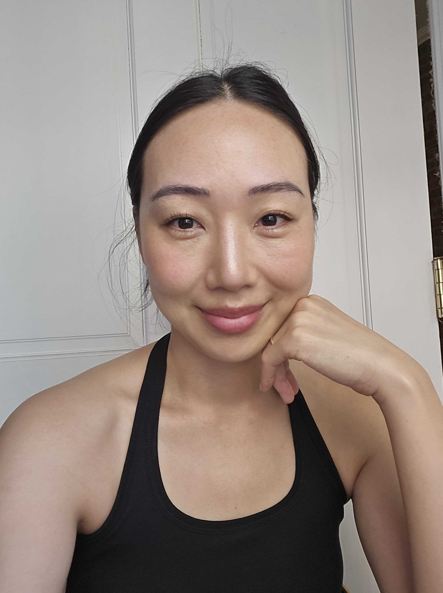

01 // about

Jane Simko, PhD
ML / Computational Neuroscientist · AI Researcher · Engineer
I'm a Postdoctoral Research Fellow / Research Scientist at Columbia University with 12+ years in applied research and data pipelines, and 5+ years training, deploying, and delivering real-time ML systems from scratch. I work across the full ML lifecycle — feature engineering, model training, evaluation, and deployment — with a background in time-series and biophysical modeling, signal processing, and, more recently, LLM-powered workflows and multimodal architectures applied to large-scale clinical and neuroscience datasets.
02 // publications
Publications
-
Local thalamic interneurons drive spindle termination and enable sleep-dependent learning
-
Thalamic control of sensory processing and spindles in a biophysical somatosensory thalamoreticular circuit model of wakefulness and sleep
-
Morphology, physiology and synaptic connectivity of local interneurons in the mouse somatosensory thalamus
-
Experimentally-constrained biophysical models of tonic and burst firing modes in thalamocortical neurons
03 // education
Education
École Polytechnique Fédérale de Lausanne
1/2016 – 1/2021
PhD in Neuroscience
Lausanne, Switzerland
Université de Lausanne
8/2013 – 1/2015
MSc in Neuroscience
Lausanne, Switzerland
UC Berkeley
8/2007 – 5/2011
BA in Integrative Biology
Berkeley, CA
04 // experience
Experience
Columbia University, Department of Neurology
3/2021 – Present
Postdoctoral Research Fellow / Research Scientist
New York, NY
- Developed an unsupervised NLP pipeline on NIH All of Us survey data to identify social determinants distinguishing opioid use disorder cases from controls; embeddings via Hugging Face sentence-transformers.
- Fine-tuned BioBERT with LoRA/PEFT on clinical free-text and structured EHR in a multimodal late-fusion architecture for substance use disorder risk stratification.
- Built and maintained end-to-end ML pipelines for ingestion, preprocessing, feature engineering, and modeling of large-scale multimodal datasets.
- Designed, trained, and deployed a 1D CNN in PyTorch for real-time classification (95% accuracy), integrated with custom hardware for closed-loop inference at sub-second latency.
- Developed automated data quality checks, serialized preprocessing scalers for consistent inference-time normalization, and modular pipeline components reused across multiple projects.
- Mentored 6 researchers; secured 2 federal grants; authored 9+ publications.
École Polytechnique Fédérale de Lausanne
1/2016 – 1/2021
PhD Researcher
Lausanne, Switzerland
- Developed computational models and large data pipelines to simulate large-scale neuronal population dynamics and biophysics using NEURON and high-performance computing clusters.
- Completed multiple full-cycle research projects from data collection to publication (Cell Reports, J. Physiology).
Penumbra Inc.
8/2011 – 5/2013
Neurotech Clinical Research Associate / Trial Coordinator
Alameda, CA
- Led coordination of multi-site neurotechnology clinical trials for Class III medical devices, ensuring data integrity, regulatory compliance, and cross-functional team alignment.
- Contributed to protocol development and operational planning for early-stage devices in a growing med-tech environment.
UC Berkeley, Department of Electrical Engineering and CS
1/2011 – 6/2011
Research Intern
Berkeley, CA
- Diagnosed and resolved technical issues during live experimental sessions; developed and debugged scripts for data acquisition.